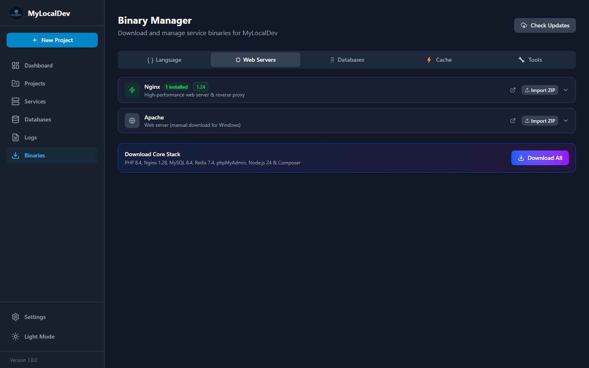
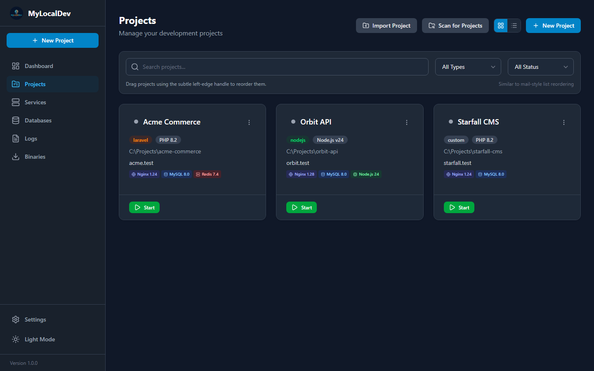
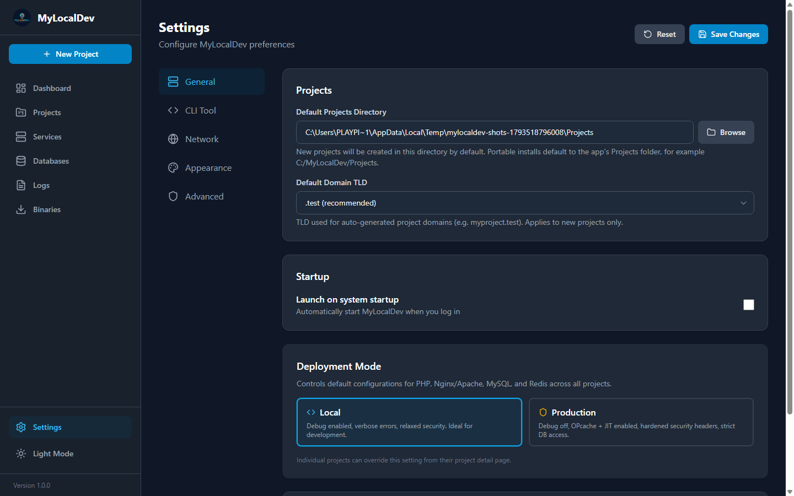

↗
Share a preview
Open a tunnel for one project, send the link, close it when the call ends.
Each project gets its own runtime, its own domain, its own data — and one place to see all of it.

Runtimes are downloaded per version and stored under one folder, so upgrading one project never breaks another. If a download is blocked on your network, import the ZIP yourself — the result is identical.
MyLocalDev writes the hosts entries, generates the virtual host and signs the
certificate. Visit shop.test and api.shop.test over HTTPS
without a single warning screen.
.test domains per project

.env stays the source of truthImporting an existing project reads its environment file instead of inventing defaults. When a stored value genuinely overrides the file, the UI marks it — no more silent surprises after a restart.
APP_KEY, DB_DATABASE and friendsMySQL 5.7 for the old store, MySQL 8.4 for the new one, PostgreSQL for analytics — each with its own port, data directory and backups.

Switch the profile per project; the generated configuration follows.
| Behaviour | Local | Production |
|---|---|---|
| PHP errors | Visible in the browser | Logged, hidden from output |
| OPcache | Revalidates constantly | Enabled with JIT |
| FastCGI workers | Few, responsive | Up to 8 concurrent children |
| Security headers | Minimal | HSTS, nosniff, frame options, no version banners |
| Queue workers | One, quick restarts | Multi-worker with backoff and retry limits |
| Scheduler | Manual | Registered Windows task every minute |
Open a tunnel for one project, send the link, close it when the call ends.
Crash loops pause themselves instead of spinning the CPU all night.
Per-project and per-service logs in one timeline, filterable by source.
The terminal picks the right runtime from the directory you are standing in.
Light and dark interfaces, with an accent colour and surface you choose.
Portable mode keeps projects, runtimes and data in a folder you control.
Install MyLocalDev next to whatever you use today, import one folder, and compare the result.